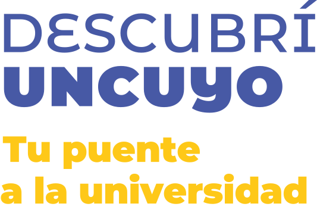

Sitio oficialUn recorrido para conocer las familias de carreras, sus facultades e institutos y toda la oferta académica de la Universidad Nacional de Cuyo.
Cada color reúne campos de conocimiento y formas de intervención relacionadas.
Elegí una facultad o instituto para ver su oferta.